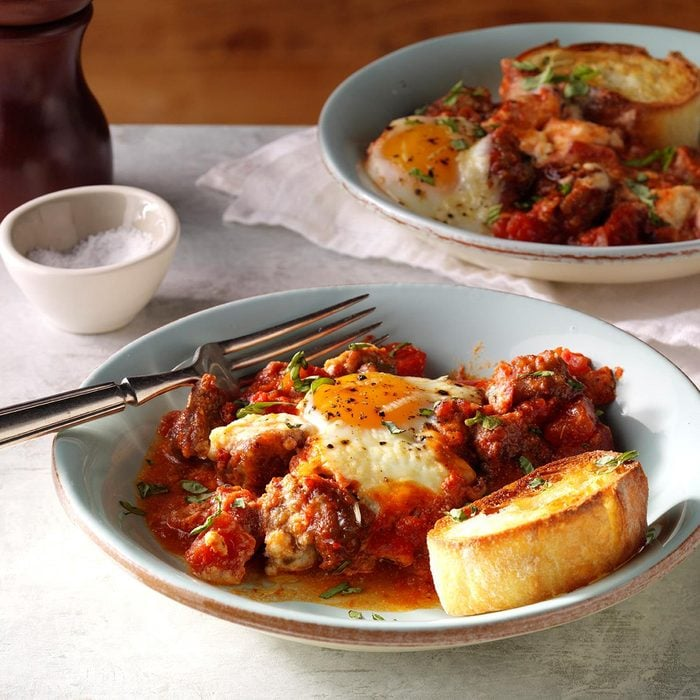

Italian Eggs & Sausage

This isn't your typical egg bake! I serve this robust casserole of eggs, Italian sausage and fire-roasted tomatoes in bowls with warm, crusty rolls spread with butter.
Ingredients
- 1 pound bulk Italian sausage
- 1 jar (24 ounces) fire-roasted tomato and garlic pasta sauce
- 1 can (14-1/2 ounces) fire-roasted diced tomatoes, drained
- 3/4 cup part-skim ricotta cheese
- 8 large eggs
- 1/4 teaspoon salt
- 1/4 teaspoon pepper
- 1/4 cup shredded Parmesan cheese
- 1 tablespoon minced fresh basil
- 1 French bread demi-baguette (4 ounces), cut into 1-inch slices
- 1/4 cup butter, softened
Watch
Directions
- Preheat oven to 350°. In a large skillet over medium heat, cook sausage, crumbling meat, until no longer pink, 3-4 minutes; drain. Stir in pasta sauce and tomatoes. Transfer to a 13x9-in. baking dish.
- Dollop ricotta cheese on top of meat mixture. Gently break an egg into a small bowl; slip egg onto meat mixture between dollops of ricotta. Repeat with remaining eggs. Sprinkle with salt, pepper and Parmesan cheese.
- Bake until egg whites are completely set and yolks have begun to thicken but are not hard, 30-35 minutes. Remove from oven; sprinkle with basil.
- Meanwhile, spread bread slices with butter; place on an ungreased baking sheet. Preheat broiler. Broil 3-4 in. from heat until golden brown, 1-2 minutes on each side. Serve immediately with baked eggs.